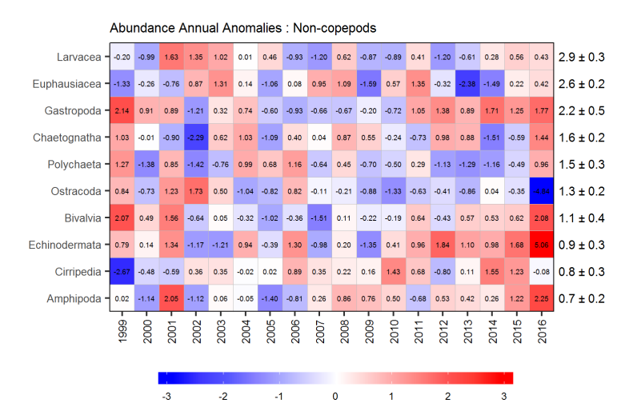

Annual anomaly scorecard for non-copepod group abundances on the Scotian Shelf sections. The table to the left shows mean and sd. The chart to the right shows anomalies from the mean for the reference period, 1999-2016, in standard deviation (sd) units. At the top of the chart, select the organism(s) of interest. Hover over the chart to see anomaly values. Read more at DFO...
| Organism | Mean | sd |
|---|---|---|
| Larvacea | 2.9 | 0.3 |
| Euphausiacea | 2.6 | 0.2 |
| Gastropoda | 2.2 | 0.5 |
| Chaetognatha | 1.6 | 0.2 |
| Polychaeta | 1.5 | 0.3 |
| Ostracoda | 1.3 | 0.2 |
| Bivalvia | 1.1 | 0.4 |
| Echinodermata | 0.9 | 0.3 |
| Cirripedia | 0.8 | 0.3 |
| Amphipoda | 0.7 | 0.2 |
The above graphic shows the same information as the one below, which is reproduced from DFO's document cited above.
